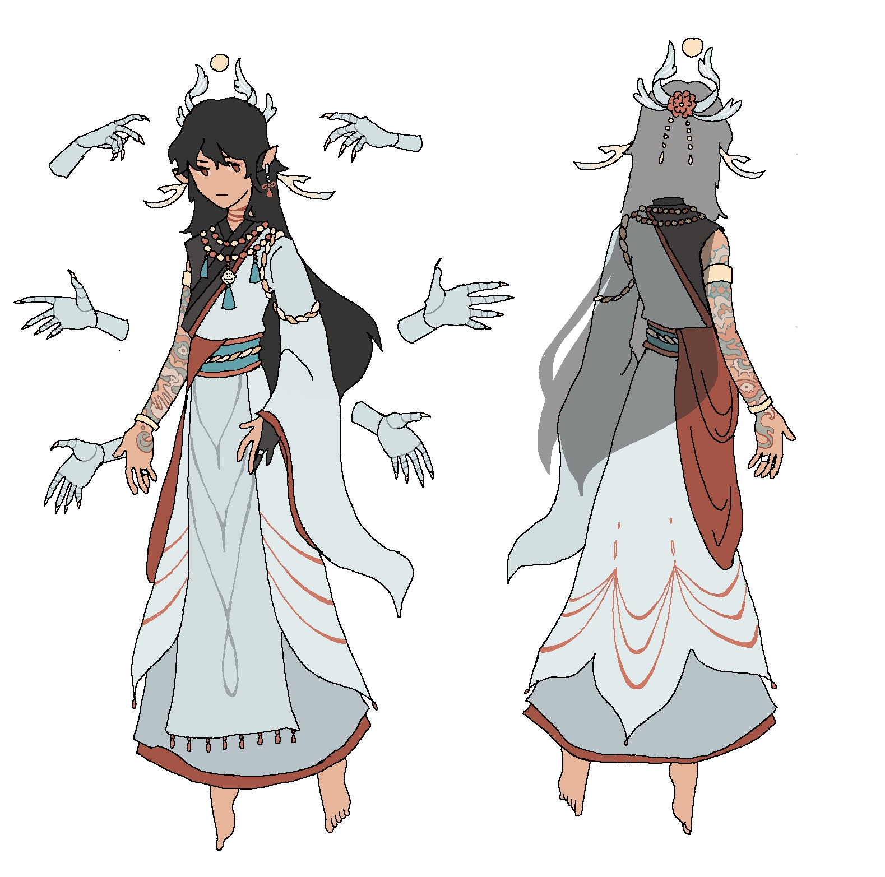

< back
Fun fact: Yuan started off as a Genshin Impact fan character!
The idea was an Sereniteapot-themed adeptus whose signature weapon was their teapot.
Their original design was purely self indulgent.
I even gave them cat ears.
Eventually, I decided being a fan character of an existing franchise was too limiting, so I changed their lore to be independent of Genshin Impact.
Of all my OCs, I think Yuan has gone through the most changes, mostly in attitude.
They were more expressive and a better person morally in early versions.

Of my OCs, I've drawn Yuan and Mela the most.
I think they represent two halves of my love for art.
Yuan represents the unreachable, perfect ideal that motivates me to improve.
They're the platonic ideal of art.
Of course, art that is perfect is also perfectly boring.
That's why, as much as they try, Yuan themself is very imperfect.
So they still embody what art is to me, imperfections and all.
Fittingly, I've always approached their design with the question "what kinds of things do I find cool, or sexy, or enjoyable to draw?"
I especially love their full body tattoo that I never draw because their clothes cover it all.
Another fun fact: The "Yue" in Yue Yuan is the Chinese character 月, which means moon.
"Yuan" is 园, which translates to "garden."
For a while, I considered writing "Yuan" as 渊, which means abyss, but it was too edgy.
I also debated writing "Yuan" as 苑, which also means garden.
I think 园 looks better, though.